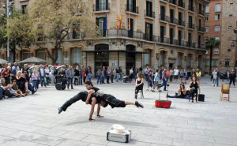
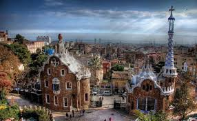

Барселона
Немногие города Средиземноморья могут гордиться столь богатым архитектурным, культурным, модернистским наследием, как Барселона - один из лучших городов Испании. Это настоящий ансамбль памятников и богатство живых страниц истории. От времен Рима сохранился Готический Квартал, от средневекового великолепия - роскошные архитектурные памятники. Старый город можно разделить на три района: самый древний, находящийся между ля Рамбла и Виа Лайетана; квартал ля Рибера, занимающий участок от Виа Лайетана до улицы Кумерс и от улицы Принсесса до моря; и квартал Раваль. Центр древней Барселоны находится на месте, где сегодня расположена площадь Сант Жаума - здесь размещался римский форум.
Интересные места Барселоны
Прогулку по Готической Барселоне лучше всего начать с площади Пласа Нова. Здесь находятся остатки римских и средневековых крепостных городских стен, которые как бы защищают фасад Кафедрального Собора, представляющего собой сердце средневекового города, его жизни и развития. Ансамбль Собора украшен двумя башнями фасада, шпилем центральной части и двумя великолепными восьмигранными башнями с шарами. Интерьер Собора поражает своей строгостью, вытянутыми и гармоничными колоннами, элегантными сводами. Рядом с Кафедральным Собором находится Дворец Архиепископа, а недалеко храм Сант Север - очень красивое произведение архитектуры барокко 1698-1705 годов.
Площадь Сант Жаума - общественный, политический и исторический центр Барселоны всех времен. Главный дворец этой площади - это дворец Женералитета, учреждение самоуправления Каталонии. Через очень низкий арочный проем можно попасть во внутренний дворик - шедевр готического каталонского искусства.
Не менее красива Площадь дель Рей. Здесь находится красивейшая часовня Санта Агенда. Под просторной аркой расположена полукруглая лестница, ведущая в Королевский Дворец. Сегодня здесь находится Архив Короны Арагона, где собраны более 4 миллионов документов из королевской Канцелярии, Королевской Аудиенции. Рядом с этой площадью находится Дом Клариана - Падельяс, готического стиля, где сейчас размещается Музей Истории Города. В этом музее представлена обширная коллекция экспонатов, обнаруженных в результате раскопок. Это и керамические изделия, и старинные монеты, и чертежи, и живописные произведения, и документы, дающие возможность более подробно ознакомиться с прошлым Барселоны. Музей Марес находится в соседнем здании, флигеле Королевского Дворца. Его стоит посетить для знакомства со скульптурным фондом, где широко представлено готическое и романское искусство.
Улицы, дворцы, кварталы
В районе старого города можно увидеть Дворец Мойшо со своими прекрасными рисунками по черному фону и с просторным внутренним двориком; самый старинный фонтан Барселоны (1367 года); самобытный по своей красоте Дворец графини Паламос, где сейчас находится Академия Словесности, 13 века; шедевр каталонской готики - Храм Санта Мария дель Мар. В старые времена этот квартал носил название Виланова де ля Мар. Здесь жили моряки, рыбаки, торговцы и ремесленники. Небольшие улочки до сих пор сохраняют свою первоначальную структуру и дух Средневековья, а улица Монтакада была в свое время самой представительной улицей Барселоны. Поэтому здесь расположено большое количество дворцов и домов знати. Например, во дворце Беренгер д’Агилар сегодня расположен музей Пикассо, открытый в 1963 году, а во дворце маркиза де Льио размещен Текстильный музей.
Стоит посетить еврейский квартал средневековой Барселоны. Улочки здесь заполнены магазинами, лавками антиквариата, художественными галереями, книжными магазинами. Здесь проводятся выставки-продажи художественных работ.
В центре квартала Раваль находится Центр Современной Культуры Барселоны и авангардный Музей Современного Искусства Барселоны (МАГБА). Этот квартал, напоминающий лабиринт, контрастирует со сложным архитектурным решением МАКБА, с формами, развивающимися от плоских элементов и окон с прямыми линиями, до извилистых пространств, в соответствии с современным духом музейной экспозиции. В музее представлены различные художественные течения, появившиеся во второй половине 20 века.
Улица Ля Рамбла - это душа Барселоны. Как сказал писатель Вильям Сомерсет Моэм, "это самая красивая улица в мире". Здесь находятся два больших фонтана, произведения скульпторов, улица заполнена книжными и цветочными киосками, открытыми днем и ночью. По этой улице можно спуститься до самого моря, до Порта де ля Пау, над которой возвышается Христофор Колумб. В древние времена по этому месту с гор к морю стекали потоки воды, и здесь же проходила вторая крепостная стена древней Барселоны. Пла де л’Ос, с выложенной на полу мозаикой Жуана Миро - это другой отрезок Рамблы - именно здесь находится театр Гран Театра дель Лисеу, венец местной оперной культуры. Все великие артисты последних полутора веков выступали здесь, и именно здесь получили признание Монтсеррат Кабалье и Жусеп Каррерас. Оперные и балетные сезоны театра являются лучшими в Испании.
Антонио Гауди
Антонио Гауди оставил значительный архитектурный след на облике всей Барселоны. Это и великолепный Парк Гуэль, и дом Касса Мила, и, конечно, Храм Святого Семейства, и многое другое.
Барселона - это единство моря и гор. Рядом с морем возвышается гора Монтжуик, высота которой составляет 173 метра над уровнем моря. С ее вершины открывается интересный вид на город. Сегодня Монтжуик представляет собой один из самых прекрасных и больших парков старого континента, он украшен крепостью, созданной в 1640 году.
Одной из главных особенностей барселонцев является их страсть к культуре и сбору коллекций, экспозиций. Со Средних веков в Барселоне возникали разнообразные коллекции, ставшие основой фондов частных учреждений и музеев, выражением творческого духа жителей города. Барселона гордится своими музеями, их более 50, а также многочисленными частными коллекциями.